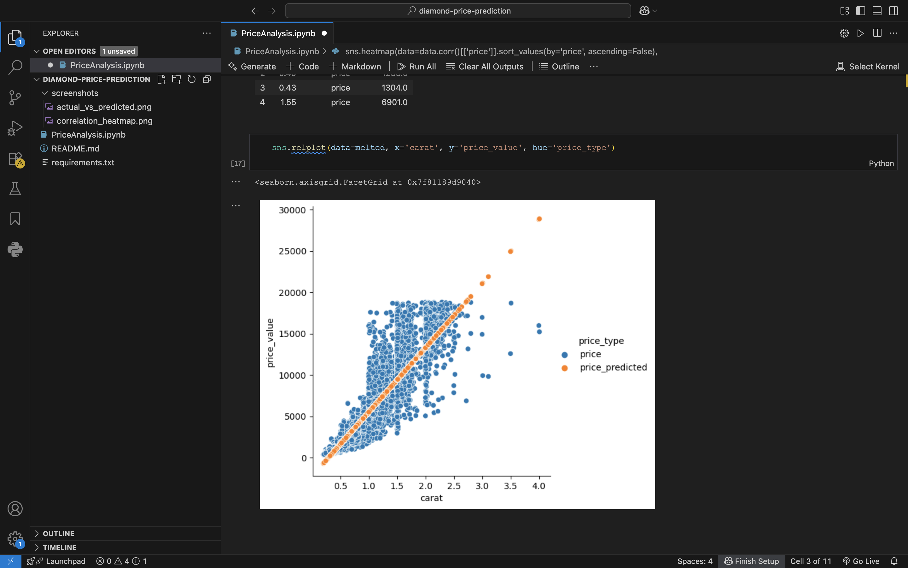
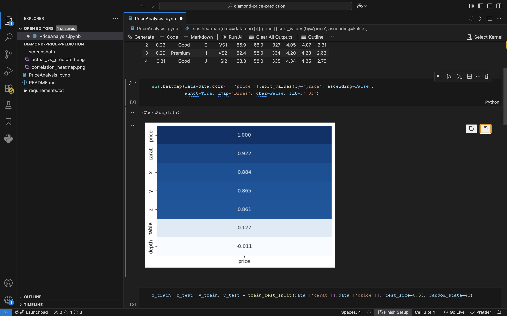

A linear regression model that predicts diamond prices from carat weight, tested against a held-out set of real diamonds to measure how much of the price variation it actually explains.
Diamond pricing depends on several factors (carat, cut, color, clarity), but carat weight is typically the strongest driver of price. This project tests how well price can be predicted using carat alone, and quantifies how much of the price variation that one variable explains.
The model explains about 85% of the variation in diamond price using carat weight alone. The chart below plots actual prices (blue) against predicted prices (orange) across the test set — the orange points tracking tightly along the diagonal shows the model's predictions closely following real prices as carat increases, with the expected wider spread at higher carats where other factors (cut, clarity, color) start to matter more.


Correlation heatmap confirming carat as the dominant predictor of price.